Como cadastrar um assinante
Para agilizar o processo de envio de documentos para assinatura, o app permite que você cadastre assinantes frequentes na base de dados do TOTVS fluig.
Para cadastrar um assinante, acesse Wesign > Cadastro de Assinantes.
Vantagens do cadastro
Ao cadastrar um assinante:
- Você não precisa digitar os dados dele (como nome, e-mail e CPF) a cada novo envio.
- O preenchimento dos campos será feito automaticamente sempre que esse assinante for selecionado.
Observação Importante
O cadastro de assinantes não é obrigatório. Você pode enviar documentos para assinatura mesmo sem realizar o cadastro préviodo assinante.
Dados do Assinante: Campos Disponíveis e Suas Finalidades
Ao cadastrar um assinante para envio de documentos, você precisará preencher algumas informações. Abaixo, explicamos cada campo disponível e seu objetivo:
- O link para acessar e assinar o documento;
- As notificações de conclusão do processo de assinatura.
Importante: O número deve ser informado no formato internacional, incluindo o código do país.
- Cliente
- Representante da empresa X
- Diretor Financeiro
- Gerente
Este campo não interfere no fluxo de assinatura, mas serve como identificador interno dentro do TOTVS Fluig.
Selecione o tipo de assinatura que o assinante utilizará. As opções disponíveis são:
Assinatura digitalA assinatura digital utiliza um Certificado Digital ICP Brasil para comprovar a autoria da assinatura. A assinatura digital garante autenticidade, integridade e não repúdio (signatário não tem como negar sua autoria). O Certificado Digital é a identidade digital da pessoa física e jurídica no meio eletrônico. É validado presencialmente, não permitindo fraudes. Se você necessita mandar documentos para fora de sua rede, é fundamental que haja confiança pública para que a assinatura seja automaticamente aceita pelos diferentes órgãos e empresas. Nesse caso, a assinatura digital é mais conveniente, pois possui a mesma validade jurídica de um documento com firma reconhecida em cartório.
Assinatura eletrônicaA assinatura eletrônica coleta evidências para comprovar a autoria da assinatura em um documento e não utiliza um Certificado Digital. Estas evidências são coletadas no momento da assinatura. O Portal coleta três principais: a grafia do signatário (com uma caneta touch, dedo, mouse ou a imagem digitalizada), IP da máquina e geolocalização. A assinatura eletrônica viabiliza a migração de ações do dia a dia da empresa do meio físico para o digital, reduzindo custos operacionais e poupando tempo. Se você necessita apenas deixar de usar papel e agilizar os processos, então conformidade e confiança não devem ser um problema, e a assinatura eletrônica pode ser considerada.
AutorizadorO usuário autorizador terá a opção de negar ou autorizar um documento, sendo assim, possui uma ação e o documento só é finalizado após todos os participantes finalizarem suas ações. Caso o autorizador negue, o documento é bloqueado só sendo permitido desbloquear com um usuário administrador ou remetente.
ObservadorÉ um participante do fluxo sem nenhuma ação no mesmo, ou seja, não irá assinar. O usuário receberá notificações sobre o documento e terá permissão para visualiza-lo.
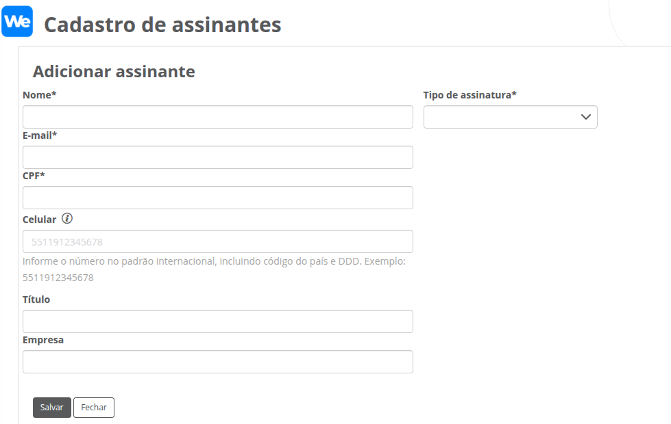
Como editar dados do assinante
Localize o registro do assinante, clique sob o registro e depois clique no botão Editar.
Os campos disponíveis para alteração serão liberados. Após a conclusão, clique em Salvar.
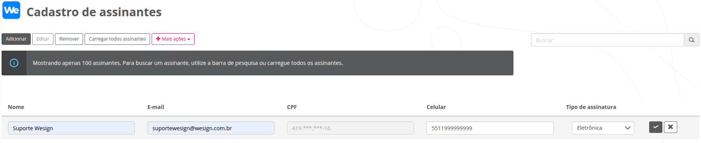
Como remover um assinante
Localize o registro do assinante, clique sob o registro e depois clique no botão Remover.
Será exibida uma mensagem de confirmação para realizar a ação desejada.
Carregando todos os assinantes
Por padrão, a página carrega apenas os 100 primeiros assinantes da base para garantir melhor performance. Para visualizar todos os assinantes, clique em Carregar todos os assinantes. Uma mensagem de confirmação será exibida e, ao confirmar, o sistema carregará todos os registros. Esse processo pode levar alguns minutos, dependendo da quantidade de dados.
Importando assinantes
A opção Importar Assinantes permite informar uma planilha no formato .CSV para criação dos assinantes em lote.
Basta o usuário selecionar a opção Mais ações > Gerar layout de importação de assinantes e preencher as informações para cadastro.
A importação de assinantes que possuam inconsistências em seus dados (e-mail inválido, CPF inválido ou duplicado, tipo de assinatura diferente do padrão aceito) serão descartados e não serão importados.
Assinantes já existentes não terão seus dados atualizados.
Preenchimento das informações.
- O link para acessar e assinar o documento;
- As notificações de conclusão do processo de assinatura.
Informe o tipo de assinatura que o assinante utilizará. As opções disponíveis são:
D (Assinatura digital)A assinatura digital utiliza um Certificado Digital ICP Brasil para comprovar a autoria da assinatura. A assinatura digital garante autenticidade, integridade e não repúdio (signatário não tem como negar sua autoria). O Certificado Digital é a identidade digital da pessoa física e jurídica no meio eletrônico. É validado presencialmente, não permitindo fraudes. Se você necessita mandar documentos para fora de sua rede, é fundamental que haja confiança pública para que a assinatura seja automaticamente aceita pelos diferentes órgãos e empresas. Nesse caso, a assinatura digital é mais conveniente, pois possui a mesma validade jurídica de um documento com firma reconhecida em cartório.
E (Assinatura eletrônica)A assinatura eletrônica coleta evidências para comprovar a autoria da assinatura em um documento e não utiliza um Certificado Digital. Estas evidências são coletadas no momento da assinatura. O Portal coleta três principais: a grafia do signatário (com uma caneta touch, dedo, mouse ou a imagem digitalizada), IP da máquina e geolocalização. A assinatura eletrônica viabiliza a migração de ações do dia a dia da empresa do meio físico para o digital, reduzindo custos operacionais e poupando tempo. Se você necessita apenas deixar de usar papel e agilizar os processos, então conformidade e confiança não devem ser um problema, e a assinatura eletrônica pode ser considerada.
A (Autorizador)O usuário autorizador terá a opção de negar ou autorizar um documento, sendo assim, possui uma ação e o documento só é finalizado após todos os participantes finalizarem suas ações. Caso o autorizador negue, o documento é bloqueado só sendo permitido desbloquear com um usuário administrador ou remetente.
O (Observador)É um participante do fluxo sem nenhuma ação no mesmo, ou seja, não irá assinar. O usuário receberá notificações sobre o documento e terá permissão para visualiza-lo.
Importante: O número deve ser informado no formato internacional, incluindo o código do país.
- Cliente
- Representante da empresa X
- Diretor Financeiro
- Gerente
Este campo não interfere no fluxo de assinatura, mas serve como identificador interno dentro do TOTVS Fluig.
Exportando os assinantes
Para gerar uma planilha com os assinantes cadastrados, utilize a opção Mais ações > Exportar assinantes.
Excluindo todos assinantes
Para excluir todos os assinantes cadastrados, utilize a opção Mais ações > Excluir todos.
Será exibida uma mensagem de confirmação para realizar a ação desejada.
Enviando um documento para assinatura
Para realizar o envio de um documento para assinatura, siga os passos abaixo.
Selecione o documento para assinatura
Selecionar documento do GED: selecione um documento que já está publicado no GED (Documentos) da plataforma TOTVS fluig. Será exibida as pastas e documentos que o usuário possui acesso no TOTVS fluig. Após localizar o documento, basta clicar na caixa de seleção ao lado do nome do documento e depois clicar em Selecionar
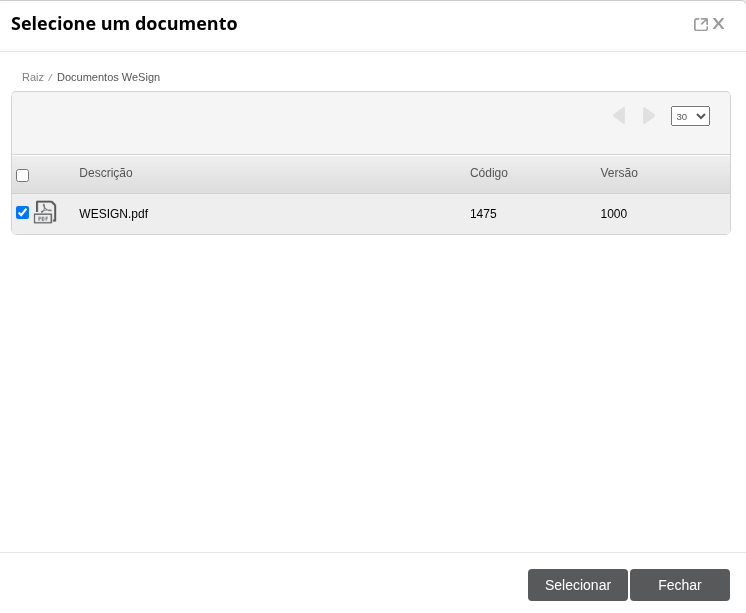
Selecionar documento do computador: selecione um documento que esteja em seu computador e posteriormente, selecione a pasta do GED onde esse documento será publicado automaticamente. Após localizar o documento, basta clicar na caixa de seleção ao lado do nome do documento e depois clicar em Selecionar.
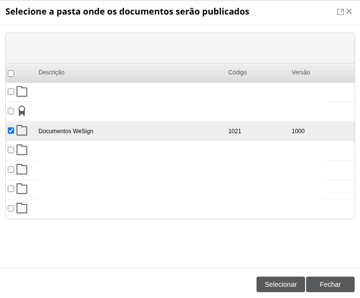
Não publique documento em uma pasta que esteja restrita ao papel de admin do TOTVS fluig. Caso isso seja feito, o documento não será enviado pois não será possível ler o conteúdo do arquivo.
Dica: inclua você como observador no fluxo de assinaturas
Ao incluir você como observador no fluxo de assinaturas:
- Será notificado por e-mail assim que o documento estiver disponível para assinatura
- Consegue acessar o documento diretamente pelo Portal Wesign e visualizar as informações do documento sem acessar o TOTVS fluig
Clique no botão Adicionar Assinante
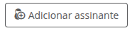
Informe os dados do participante do documento. Os participantes incluídos não serão cadastrados no Cadastro de Assinantes e não é necessário cadastrar um participante para incluir no fluxo de assinaturas. Os dados abaixo devem ser preenchidos.
- Selecione o assinante: selecione assinantes já cadastrados na página Cadastro de Assinantes. Após selecionado, seus dados serão preenchidos automaticamente nos respectivos campos;
- Etapa (obrigatório): informe a etapa que o assinante deve assinar. Se não existir ordem de assinatura, então, por padrão, deixe a etapa como “1”. Caso exista ordem para assinaturas, informe a etapa que o assinante deve assinar. Por exemplo, o “Assinante 1” deve assinar antes do “Assinante 2” e “Assinante 3”, então o “Assinante 1” ficará na etapa 1, e o “Assinante 2” e “Assinante 3” ficarão na etapa 2. Caso seja necessário adicionar mais etapas, basta clicar no botão “Incluir nova etapa”;
- E-mail (obrigatório): e-mail do assinante que receberá o link de assinatura e notificações de conclusão do processo de assinatura;
- CPF (opcional): CPF do assinante. Para estrangeiros, o campo é opcional. Para brasileiros, considere sempre informar o dado;
- Título (opcional): nomenclatura opcional utilizada para identificar o assinante no processo de assinaturas e no manifesto, por exemplo, “Cliente”, “Representante da empresa X”, “Diretor Financeiro”, “Gerente”, etc.
- Tipo de Assinatura (obrigatório): escolher o tipo de assinatura que o assinante utilizará no fluxo de assinaturas. Veja o detalhamento de cada opção aqui .
- Tipo de Autenticação (obrigatório):Essa
funcionalidade garante maior segurança
no processo de assinatura eletrônica, evitando que o documento possa ser assinado por
outra pessoa que tenha obtido acesso ao link de assinatura do assinante.
Os tipos de autenticação disponíveis são:
- E-mail:Recebimento da solicitação de assinatura por e-mail, permitindo que a assinatura seja realizada diretamente no e-mail recebido.
- E-mail e SMS:Permite que a assinatura seja realizada diretamente no e-mail recebido, além de exigir uma confirmação com código via SMS.
- SMS:A confirmação da assinatura é autenticada diretamente por meio do SMS.
- E-mail e WhatsApp:Permite que a assinatura seja realizada diretamente no e-mail recebido, além de exigir uma confirmação com código via WhatsApp.
- WhatsApp:Recebimento do link de assinatura diretamente pelo WhatsApp. A confirmação da assinatura é autenticada diretamente no WhatsApp.
- E-mail e Aplicativo Autenticador (Google Authenticator)::Permite que a assinatura seja realizada diretamente no e-mail recebido, além de exigir uma confirmação com código via aplicativo autenticador (Google Authenticator).
- E-mail e Selfie:Permite que a assinatura seja realizada diretamente no e-mail recebido. A assinatura eletrônica só poderá prosseguir após a habilitação da câmera para tirar uma selfie. Caso a câmera não seja habilitada, o participante só poderá continuar a assinatura utilizando o certificado digital.
- E-mail e PIX:Permite que a assinatura seja realizada diretamente no e-mail recebido, com solicitação de um segundo fator via PIX para confirmação. Será cobrado um valor simbólico para a confirmação, que será estornado após a autenticação.
- Celular (opcional): informe o número no padrão internacional, incluindo código do país e DDD. Exemplo: 5511912345678. Necessário apenas para os tipos de autenticação que utilizam número de celular para notificação.
Após informado os dados, clique em Concluir .
Informe todos os participantes do documento e clique em Concluir
Após o documento ser enviado para assinatura, todos os participantes relacionados no documento receberão um e-mail de notificação informando sobre a necessidade de realizar a assinatura no documento. Quando o documento for completamente assinado, ou seja, quando não houver mais assinaturas pendentes, todos os participantes receberão um e-mail informando a conclusão do documento e o manifesto de assinatura.
Para enviar o documento, clique no botão Enviar.
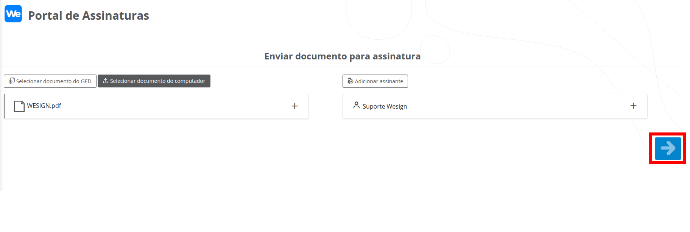
Verifique se o documento foi integrado
Sempre verifique no Quadro de Status se o documento foi integrado e está com status de Pendente.
Documentos que ficam com status de Enviando não foram integrados e você pode consultar o motivo posicionando o mouse sob o ícone.
Caso tenha dúvidas sobre o erro, contate o Suporte Wesign para maiores informações.
Antes de realizar um novo envio, faça o cancelamento do documento que não foi integrado.
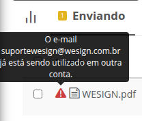
Caso o alerta do navegador seja exibido no processo de envio do(s) documento(s), clique em Aguarde. Normalmente essa mensagem é exibida quando documentos pesados ou vários documentos estão sendo enviados ao mesmo tempo.
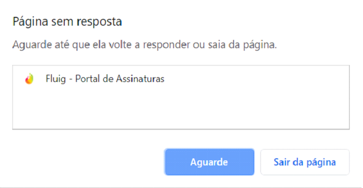
Modo de utilização
Através do Quadro de Status é possível que o usuário visualize todos os documentos enviados, porém, ele não poderá visualizar o conteúdo de um arquivo caso não tenha permissão no GED (Documentos) do TOTVS Fluig. Todas as regras de segurança do GED (Documentos) serão respeitadas no que diz respeito à visualização do conteúdo de um documento. As ações do documento ( Notificar assinantes pendentes, Incluir novo assinante, Cancelar assinatura, Descartar assinante, Compartilhar link de assinatura) só estarão disponíveis para o remetente do documentou e usuários no papel admin.
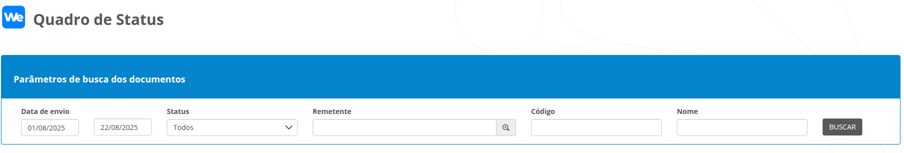
É possível realizar um filtro nos documentos exibidos no Quadro de Status. Ao abrir a tela, nenhum registro será carregado. Somente após o preenchimento dos dados e a execução que serão disponibilizados os dados em tela. Pode-se realizar a busca nos documentos com os seguintes parâmetros:
- Data de Envio: data em que o documento foi enviado. Por padrão, sempre trará o primeiro dia do mês corrente até a data atual de execução;
- Status do documento: busque apenas os documentos com o status desejado. Por padrão, tratá “Todos”, que são todos os status disponíveis;
- Remetente: busque documentos que um remetente específico enviou. Por padrão, trará o usuário corrente como “Remetente”;
- Código do documento: busque o documento pelo seu ID no GED. Se não informado, buscará todos os documentos. Por padrão, o valor será deixado em branco;
- Nome do documento: busque o documento por palavras que contenham em seu nome. Se não informado, buscará todos os documentos. Por padrão, o valor será deixado em branco;
Cada aba representa um status de documento diferente. Clique na aba desejada para visualizar os documentos.
Os documentos com status de Pendente podem ser atualizados no Quadro de Status das seguintes formas:
- Através datasets sincronizados
- Através Callback
- Ações do documento
No Quadro de Status é possível visualizar o status da assinatura de cada assinante. A exibição dos status estarão disponíveis caso o Serviço Callback esteja ativo.
Observação Importante
O status do assinante é atualizado somente pelo serviço de Callback. Caso identifique que um assinante com o status desatualizado, isso não influencia no fluxo de assinaturas do documento e nas notificações de pendência enviadas por e-mail.
O status do assinante será corrigido automaticamente quando o documento for completamente assinado e seu manifesto gerado no TOTVS fluig.
Após pesquisar os documentos, na aba Pendente, na coluna Assinantes, ao clicar no botão com o número de assinantes, é possível realizar as seguintes ações no documento:
- Notificar assinantes pendentes: Permite reenviar o e-mail de assinatura para os assinantes que ainda estão pendentes.
- Gerar manifesto: Verifica no Portal Wesign se o documento foi assinado e gera seu manifesto.
- Assinar documento: Caso o e-mail do usuário logado no fluig seja o mesmo que um dos assinantes, é possível realizar a assinatura clicando nesse botão.
- Incluir novo assinante: Permite adicionar mais assinantes no fluxo de assinatura do documento.
- Cancelar assinatura: Permite cancelar a assinatura do documento. Também é possível cancelar através da widget Portal de Assinaturas
Também existem ações que podem ser tomadas para cada assinante. Clique no botão Ações:
- Compartilhar link de assinatura: Permite compartilhar o link de assinatura do signatário.
- Descartar assinante: Permite remover o assinante do fluxo de assinatura do documento.
- Motivo: Caso o assinante tenha rejeitado o documento, é possível visualizar o seu motivo de rejeição.
Você pode ver as informações do assinante de forma resumida, como o tipo de autenticação utilizado e o horário de assinatura, clicando no botão Detalhes
Notificando os assinantes pendente de assinatura
Para enviar um e-mail informando a pendência de assinatura do documento, realize o procedimento abaixo.
- Realize a busca do documento e o localize na aba Pendente, na coluna Assinantes, clique no botão número de assinantes.
- Clique em Notificar assinantes pendente e aguarde a mensagem de conclusão.
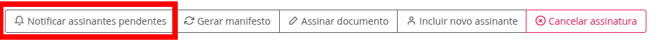
A notificação será enviada somente para os participantes que ainda não assinaram, de acordo com o status informado no Portal Wesign.
O sistema consulta o status de assinatura diretamente no Portal Wesign.
O status exibido no TOTVS Fluig não é considerado para o envio da notificação.
Ou seja, mesmo que no TOTVS Fluig apareça que a assinatura está pendente, se no Portal Wesign constar que o participante já assinou, a notificação não será enviada.
Gerar manifesto
Será verificado no Portal Wesign se o documento foi concluído e não há assinaturas pendentes. Se o documento estiver concluído, o manifesto de assinaturas será gerado e o status do documento será atualizado para Assinado.
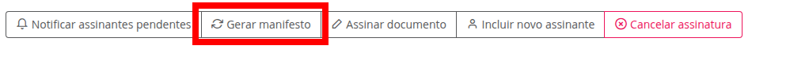
Assinar documento
O participante pode assinar o documento diretamente pelo fluig. Ao selecionar essa opção, abrirá uma nova página do navegador em que redireciona para o Portal de Assinaturas, onde o participante realizará a assinatura. Essa opção só está disponível se o e-mail do usuário logado no fluig for igual ao e-mail de um dos participantes. Para isso, realize o procedimento abaixo.
- Realize a busca do documento e o localize na aba Pendente, na coluna Assinantes, clique no número de assinantes.
- Clique em Assinar documento e abrirá uma nova janela no navegador para assinatura do documento.
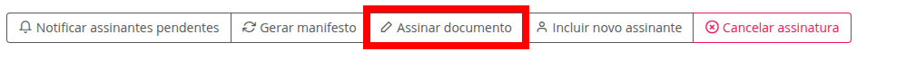
Incluindo assinante
Após o documento ter sido enviado para assinatura, pode ser necessário incluir novos participantes no fluxo de assinatura. Para isso, realize o procedimento abaixo.
- Realize a busca do documento e o localize na aba Pendente, na coluna Assinantes, clique no número de assinantes.
- Clique em Incluir novo assinante para informar quais participantes serão incluídos no fluxo de assinatura do documento. Após selecionar os usuários desejados, clique em Concluir. Após todos os participantes terem sido informados, clique em Enviar.
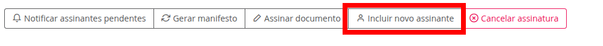
Cancelando um documento
Para cancelar um documento, realize o procedimento abaixo.
- Realize a busca do documento e o localize na aba Pendente, na coluna Assinantes, clique no número de assinantes.
- Selecione a opção Cancelar Assinatura e aguarde a mensagem de conclusão.
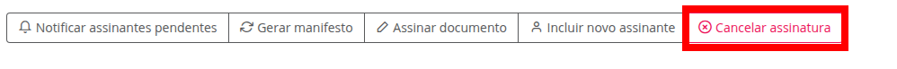
Descartar um assinante
Para descartar a participação de um assinante, realize o procedimento abaixo.
- Realize a busca do documento e o localize na aba Pendente, na coluna Assinantes, clique no número de assinantes.
- Localize o assinante desejado e clique no botão Ações.
- Selecione a opção Descartar assinante e aguarde a mensagem de conclusão.
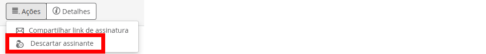
Verificando o manifesto do documento assinado
O Manifesto de Assinaturas é um registro formal ou documento auxiliar que lista e descreve as assinaturas aplicadas a um determinado documento digital.
Ele serve como uma prova de que o processo de assinatura ocorreu, indicando quem assinou, quando assinou, qual o tipo de assinatura utilizada (e.g., simples, avançada, qualificada) e qual documento foi assinado, além de recolher outras evidências, como dados de geolocalização onde a assinatura foi realizada e a imagem da assinatura eletrônica.
Após o documento ser concluído, o status do documento no Quadro de Status será atualizado para Assinado.
O manifesto será inserido como anexo no documento original no GED (Documentos) do TOTVS fluig. Podem ocorrer casos em que ele não se encontre como anexo, mas esteja na mesma pasta do documento original. Nesse caso, basta baixar o documento em sua máquina e anexar no documento original. Para verificar o manifesto, realize o procedimento abaixo.
- Realize a busca do documento e verifique a aba Assinado;
- Após localizar o documento, clique no Código do documento;
- Você será redirecionado para o documento no GED (Documentos);
- Localize no canto superior direito a opção Ações do Documento > Ver anexos;
- Clique no nome do manifesto para baixá-lo em seu computador;
- Após baixar, basta extrair o arquivo e terá todas as evidências.
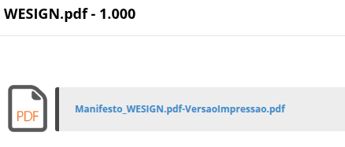
Excluindo documento do GED
Caso um documento que esteja com status Enviando para assinatura seja excluído do GED (Documentos) do TOTVS fluig, a rotina de envio para assinatura irá detectar a exclusão do mesmo e interromper o processo de envio para o Portal Wesign.
Se o documento já foi assinado, o manifesto de assinaturas será direcionado para a pasta Excluídos. Por exemplo, um documento é enviado para assinatura, ele é assinado, mas ao retornar o manifesto para o TOTVS fluig é identificado que o documento original foi excluído no GED (Documentos). Dessa forma não será possível anexar o manifesto. Então o manifesto será criado na pasta Excluídos junto com o documento original.
Extraindo relatório
Para extrair uma planilha do Excel com os dados do documento, realize o procedimento abaixo.
- Realize a busca dos documentos, informando os filtros desejados;
- Na primeira aba, onde fica o gráfico geral de documentos, localize a opção Mais ações > Exportar;
- Será gerado uma planilha Excel com dados básicos para gerenciar as informações.